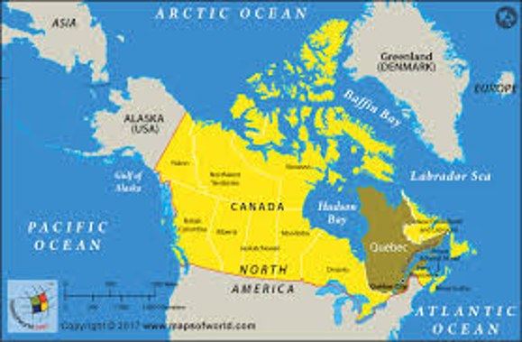
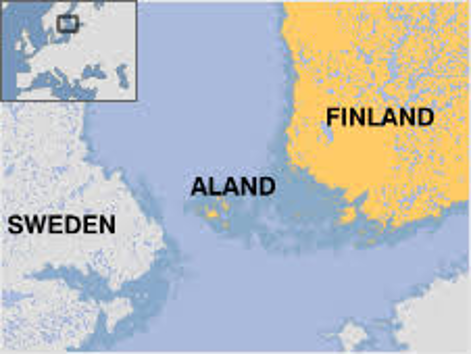
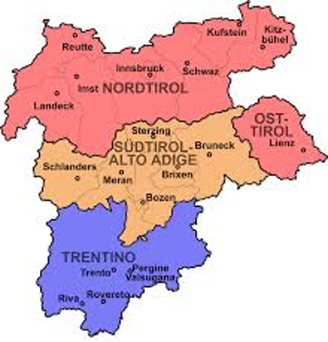
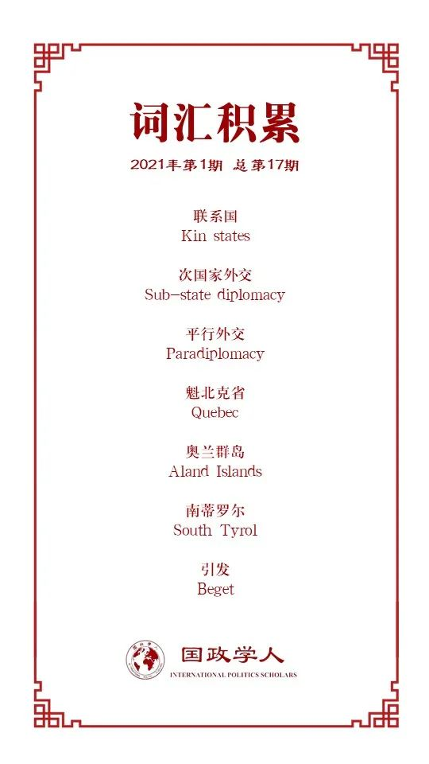

收录于合集

作品简介
【作者】 Cristian Cantir, 奥克兰大学政治学副教授。他的研究方向为国内政治对外交政策的影响、次国家地方外交和角色理论。
【编译】 赖永祯（国政学人编译员，芝加哥大学社会科学研究生）
【校对】 扎西旺姆
【审核】 王川
【排版】 陈育涵
【美编 】杜丛竹
【来源】 Cantir, C. (2020). Kin states in sub-state diplomacy conflict dynamics. Foreign Policy Analysis , 16(1), 59-77. https://academic.oup.com/fpa/article/16/1/59/5288566.
【归档】 《国际关系前沿》2021年第1期，总第28期。
期刊简介
《外交政策分析》（Foreign Policy Analysis）杂志是由牛津大学出版社代表国际研究协会出版的季刊。该期刊旨在以比较或具体案例的方式研究外交政策决策的过程、效果、原因或结果。该期刊当前影响因子为1.329。
**** “原籍国”与次国家外交：冲突动态过程
Kin States in Sub-state Diplomacy Conflict Dynamics
Cristian Cantir
内容提要
次国家行为体何以在开展外交活动时与其中央政府产生冲突？既有学者多关注多民族国家中一些拥有独特民族身份的地区（例如加泰罗尼亚）的政策行为，并认为这些自治政府更倾向于在未同中央政府协调的前提下参与外交，并在国际舞台上推广其身份，由此引发与中央政府的冲突。特别是当自治政府对自身自治程度与维持身份认同的现存制度工具感到不满意时，这种情况更会发生。本文援引族群冲突的有关理论，从跨国视角关注次国家外交的影响。通过论述三个案例（法国- 加拿大-魁北克、奥地利-意大利-南蒂罗尔、瑞典-芬兰- 奥兰群岛），本文揭示了跨国民族中的“原籍国”针对自治地方所属国关系的政策选择能够加剧或减弱自治体开展“次国家外交”时与中央政府的冲突关系。从更广义的角度，本文是对主权国家在次国家外交行为中的角色进行理论化的一次尝试。
文章导读
01
引言
“次国家外交”（sub-state diplomacy）指一国地方政府参与国际外交的行为，其参与主体可包括联邦制主体、省、自治地区或获得中央政府权力下放的地区主体。有关文献关注的一个关键问题是：次国家外交的地方政府在什么时候会同其中央政府产生冲突？为什么会产生冲突？尤其是对于一些拥有不同于国内其他地区的独特身份认同的区域而言，其“外交行为”因与中央政府在外交与国家认同上的主导角色产生挑战而引发后者的“习惯性恐惧”（habitual fears），故而这种冲突更易发生。不同于大部分文献关注中央政府与地方政府的双边关系，本文作者借鉴族群冲突与民族主义的视角，认为作为（中央政府与自治地方政府）“第三方”的、与自治地方存在族群联系纽带的“原籍国”（kin state）行为，在地方外交中扮演着加剧或缓和冲突的作用。作者援引20世纪60年代的加拿大魁北克地区（Quebec）、20世纪20-40年代的芬兰奥兰群岛（Aland Islands）和20世纪50-60年代的意大利南蒂罗尔（South Tyrol）三个案例，发现 各自的自治地方均由于对自身自治处境的不满而转向开展针对原籍国的外交，从而引发同各自中央政府的冲突；而其原籍国（法国、瑞典与奥地利）在三个案例中的“央地关系”所扮演的不介入、积极介入与调停政策，塑造了不同的央地互动过程。 在魁北克问题上，法国政府出于对魁北克在资源分配与维持身份认同处境的理解，在加拿大政府的反对下仍允许魁北克开展地方外交，作出了支持魁北克国际参与的政策，从而增强了魁北克“次国家外交”中引发的冲突；在奥兰群岛问题上，由于瑞典政府很大程度上不赞成奥兰当局在资源分配与身份认同的诉求，故而不支持奥兰开展地方外交，从而降低了次国家外交产生的冲突风险；而这一举措也最终促使奥兰人接受其在芬兰的自治局面，并同芬兰政府在自治问题上达成共识，并减少了其独自开展地方外交的积极性；在南蒂罗尔问题上，虽然奥地利政府理解南蒂罗尔人对身份认同与资源分配问题的担忧，但是奥地利的政策措施并非积极介入南蒂罗尔的“国际参与”（例如与其签署双边条约或支持其独自参与国际组织），而是推动意大利政府与南蒂罗尔的谈判来减轻后者的担忧，从而扩大南蒂罗尔的国际影响力；而这一政策虽然在短期内增强了南蒂罗尔寻求地方外交而产生的冲突，但是长期而言通过双边安排降低了这种冲突属性。 简而言之，原籍国的政策选择对这种“冲突化的平行外交”（conflictual paradiplomacy）的起源和过程有着重要影响。因此，自治地方与中央政府在国际事务上的冲突并非发生在真空之中，而这种冲突过程会因原籍国的行为而得到恶化或减弱。
02
关于次国家外交
现有的研究揭示了大量的次国家外交行为，关于这些现象的分析多归因于结构层面的全球化现象，以及地方政治层面的动态过程。早期研究多就地方外交现象作出从“合作型”到“冲突型”这一连续体的分类。此外，区域与全球层面的因素也对这一动态过程产生影响；例如欧盟的发展为次国家群体开展合作提供了制度空间，从而通过认可地方外交的地位而增加了区域间合作，降低了相互冲突。同时，次国家地方自身是否迥异于国内其他地区的身份认同也决定了它们的外交行为是否具有冲突性，尤其在多民族国家中更易产生这一问题；因为中央政府常常会担忧地方自治体的外交参与削弱了前者对外交权力的垄断地位及其推动单一国家身份的进程。
关于中央政府与地方自治体的紧张关系常常由于以下两个原因：首先，当自治政府认为中央政府在前者寻求控制内政与对外事务的问题上设限时，则会绕开中央政府而自行在国外寻求资源与支持；相反，当自治地方能够从中央政府寻求资源时，这种在外交上公开冲突的可能性也会下降。其次，如果自治地区认为从国家现存的制度框架中获得的“自治程度”不足以维持自身的“身份认同”时，自治地区则通过寻求国际活动以维持身份认同。但是，已有研究都忽视了作为自治地区族群的“原籍国”第三方行为体的作用。相比之下，族群冲突问题中的“原籍国”角色研究则为“次国家外交”问题提供了理论参考：即冲突中的族群、该族群的原籍国与与之冲突的所在国政府三方角色的互动模式，对于导致冲突极化或持续和平的结局产生不同的影响。 原籍国选择“不介入”其跨国族群的冲突时，则意味着剥夺了后者寻求外部支持的空间并支持其政府抑制分离主义；而原籍国也可能“积极介入”其所属跨国族群的冲突并使局势恶化；最后，原籍国也可以扮演“调停”角色，推动其跨国族群与其所属中央政府开展正式谈判，或用物质与外交手段促使其中央政府在少数族裔问题上妥协。 本文将以上三种政策手段的分析运用至涉及跨境族群自治地方的“央地关系”外交问题上，探究“介入政策”、“不介入政策”与“调停政策”对于跨境民族地方外交实践与中央政府关系的影响。
03
**
**
案例论述
1.法国与魁北克问题

加拿大魁北克省
在加拿大省份中，魁北克省因其法语文化认同与自十九世纪以来寻求参与国际社会而突出。至20世纪60年代，魁北克因深感加拿大政府提供的自治权有限而不安，认为不足以维护其法语身份。在这一时期，魁北克“新民族主义”兴起，因对于法裔加拿大人的边缘化与“美式现代化”的担忧，故而寻求魁北克地区更大范围的自治甚至独立。对于魁北克政府而言，这一环境将促使其加强与法国的联系并推动其“国际主体”身份以维护其独自的文化认同。1961年，魁北克当局独自在巴黎建立联络处，以此加强同法国的文化联系；而法国也对这一联络处的设立表示“特别关注”（exceptional attention）。这一举措引发其同加拿大政府产生关于联络处外交地位的分歧。加拿大政府认为，外交事务应当为联邦政府专属，而魁北克只能通过联邦政府渠道维持同法国的联系。直到1964年，加拿大与法国协商同意，允许魁北克联络处的代表享有领事地位。但是，尽管加拿大认为这一地位与其他省份派驻于英国的代表相似，但是魁北克代表处却被法国外交体系视为具有大使层级。因而在法国的支持下，魁北克在20世纪60年代推进了其国际参与议程。1965年魁北克与法国签订教育合作“协定”（entente），该协定不具有国际法地位，以代替易引发加拿大政府不满的“协议”（agreement）一词。尽管加拿大政府认可了这一协定，但是魁北克代表坦承其实现了首次签署“国际协定”的目标。而在政治上，1967年法国总统戴高乐在蒙特利尔世博会期间访问魁北克，对法裔加拿大人高呼“自由魁北克万岁（Vive le Quebec libre）”，由此激怒加拿大联邦政府；而戴高乐则在并未到访渥太华的情况下就返回法国。这一举措是法国政府试图绕开加拿大当局，直接同魁北克政治领导人与民众互动的标志。另一方面，法国政府在去殖民化浪潮下建立了以保护法国文化为目标的“法语国家共同体”，并在魁北克是否单独参加这一组织的问题上引发同加拿大政府的冲突。最终，加拿大政府同意魁北克通过“参与当局”（participatory government）的特殊身份加入这一组织。
总而言之，法国在20世纪60年代认可魁北克当局维护法语文化的焦虑，以及魁北克政治精英寻求通过国际参与以保持自身身份的诉求；同时也成为介入魁北克的积极参与者，并在加拿大政府反对的情况下支持其巩固国际存在。在魁北克参加次国家外交的三角关系中，法国（特别是在戴高乐时期）试图寻求提升魁北克的地位并降低加拿大当局的声音；由此产生的主要结果便是加剧了双边关系的紧张。而法国的外交行为也暗示了原籍国的政策选择能够影响地方政府与中央政府围绕外交事务形成的双边互动关系。
2.瑞典与奥兰群岛

芬兰奥兰群岛
奥兰自治区由芬兰西南部的群岛组成，其主要民众讲瑞典语。在俄罗斯于1809年吞并前，该岛曾属于瑞典。而在1917年芬兰独立后，芬兰取得对该岛的控制权。奥兰人也在一战结束前夕寻求同瑞典的统一：1917年8月奥兰召开非正式议会，并先后在同一年和1919年提出统一诉求并得到瑞典政府的支持，由此引发瑞典与芬兰两国的纠纷。1920年芬兰议会通过针对奥兰群岛的自治法，遭到奥兰民众的反对；英国政府将该议题诉诸国际联盟后，国联在1921年委任一委员会处理这一纠纷，并在其决议中认为，芬兰在对奥兰群岛享有主权的前提下，具有维护当地瑞典族裔身份的义务，并保证该地的“非军事化与中立”地位。1921年6月，瑞典与芬兰政府达成协议，同意给予奥兰语言与制度上的自治权，从而减低了此前就该地区产生的冲突。但是，当地大多数民众仍然不接受芬兰政府的决定，导致其第一届议会选举处在较低的投票率水平。而奥兰群岛对自治协定的不满促使其在20世纪30-40年代期间开展国际活动，游说瑞典政府寻求统一，但遭到后者拒绝，认为自治协定能够足以维持居民的身份认同。20世纪30年代末因欧洲局势恶化，瑞典与芬兰两国讨论重启奥兰群岛部分地区军事化问题，引发当地民众对芬兰在该地实施征兵制的担忧。此后，奥兰群岛试图将该问题诉诸国际联盟，再次引发同芬兰政府的冲突，原因在于芬兰认为在奥兰问题上，只有中央政府才能在国际联盟中拥有发言权。二战结束前夕，奥兰群岛再次寻求与瑞典统一：1944年奥兰议会议长会见瑞典首相阿尔宾·汉松（Albin Hansson），试图说服后者支持其统一或奥兰自行独立，但瑞典首相否认了这两种选项的可能性；而芬兰政府也坚称，奥兰群岛不得谋求更大程度的地位，因为这一地位得到了1921年条约的保证。而在1950年联合国秘书处的一份报告中，瑞典政府同意其中就奥兰问题的论述，即1921年条约中体现的“芬兰政府对瑞典政府就履行保障奥兰的自治权与瑞典裔身份认同的义务”仍然存在。
也就是说，在奥兰问题上，作为原籍国的瑞典支持了芬兰对奥兰群岛的立场，并坚持反对奥兰群岛开展单方面国际活动。作为自治地方的奥兰群岛在“外交”的三边关系中地位得以弱化，从而减轻了因地方外交导致国家间冲突的可能性。瑞典在其中扮演的不介入角色并不能完全消除奥兰人的身份焦虑，但是原籍国介入度的下降却同时抑制了因地方外交导致双边关系紧张与冲突外溢的趋势。
3.奥地利与南蒂罗尔

“蒂罗尔地区”（其中中部南蒂罗尔（橙色）、南部特伦托（蓝色）属意大利，红色为属奥地利的蒂罗尔州）
作为德语区的南蒂罗尔曾长期属于奥地利哈布斯堡王朝的一部分，一战后移交给意大利，并至今仍处于意大利的控制下。1946年意大利与奥地利双方签署关于南蒂罗尔特殊地位的协定，承认奥地利作为“南蒂罗尔地区德语少数族裔的保护国（protector）”。这一协定也成为此后南蒂罗尔与意大利中央政府多次签署自治协定的基础。此外，该协定确立了该地区的自治立法与行政权、境内不同语言群体的平等权利与对德语群体的特殊保护地位。但是，由于长期以来该地区对意大利政府保障自治权承诺的担忧，南蒂罗尔积极对奥地利开展地方外交，以求在国际组织中扩展影响力，并促使意大利政府与南蒂罗尔达成新自治协定。奥地利同意南蒂罗尔的诉求，但是其回应措施则是促成意大利政府与南蒂罗尔双方在正式框架下谈判。而谈判框架的建立也使得南蒂罗尔此后减少了开展地方外交与实施国际斡旋的积极性。奥地利的调停政策也降低了南蒂罗尔开展地方外交所带来的冲突。
1948年意大利政府将南蒂罗尔与邻近的特伦托合并为一个单一的行政区，引发当地德语少数族裔对自治地位受到“稀释”的担忧。1954年，在当地占主导地位的“南蒂罗尔人民党”向意大利政府致信，要求强化自治权以保障当地的族裔身份地位。随后南蒂罗尔与奥地利官员建立联系，以争取在同意大利政府的谈判中获得外部支持。这一举措较为“成功”，并使奥地利政府对意大利称，可以建立一个双边委员会讨论南蒂罗尔问题。但是，意大利政府则认为双边谈判不应有南蒂罗尔方面的参与。1955年，意大利外长称，奥地利推动南蒂罗尔争取利益的举措是“干涉意大利内部事务”的行为。1958年，南蒂罗尔人民党提出一份新的自治协议，却在意大利政府的批评下获得了奥地利政府的支持。在两国关系因该问题而僵持的情况下，南蒂罗尔转向请求奥地利政府将该问题“国际化”，以迫使意大利与该地谈判。随后，奥地利政府将该问题先后提交至“欧洲委员会”（Council of Europe, 1949年成立的保障欧洲人权的国际组织，非欧盟下设机构）与联合国大会讨论，最终联合国大会在1960年通过1497号决议，要求两国就该争议问题进行协商。
南蒂罗尔问题由于“国际化”及当地民众的长期抗议促使了意奥两国在1969年达成第二项自治协议，1972年意大利政府宣布给予南蒂罗尔更大范围的自治权。在自治政策的长期实施下，1992年奥地利政府“确认所有重要问题都得以解决”，并请求联合国移除这一议程。和法国对魁北克地区的态度相似，奥地利对于南蒂罗尔的自治焦虑也持回应的立场，并在引发意大利的反对情况下积极介入南蒂罗尔的地方外交进程；但与法国对魁北克问题态度有所不同的是，奥地利在其中扮演了一个正式调停者的角色，促使意大利就该问题进行谈判，由此平衡意奥与南蒂罗尔三方之间的关系。奥地利的政策选择也最终推动了南蒂罗尔自治问题的解决。
04
结论
本文通过借助族群冲突与民族主义研究中对“第三方”角色作用的探讨，关注原籍国在自治体开展次国家外交中的角色。既有研究认为，当一个地区拥有迥异于国内其他地区的族裔身份认同且对自治地位感到不满意时，该地区会倾向于绕开中央政府开展外交行动以寻求对自治地位的“国际支持”。然而，自治地区民众的“原籍国”政策选择对次国家外交的发展方向产生重要的影响：在“原籍国”介入下的三角关系中，原籍国的选择有可能会加剧或减轻地区冲突。在以上三个案例中，三个自治地区都对其自治地位不满意并开展“次国家外交”；但是，自治区族裔的原籍国的政策反应的差异影响了次国家外交的发展方向。瑞典对于奥兰问题的不干预政策减弱了奥兰寻求国际影响力的努力；法国接受魁北克在自治问题上的相关主张加剧了20世纪60年代法加双边关系的持续紧张；奥地利在南蒂罗尔问题上则寻求建立正式框架推动其与意大利的双边谈判，使得自治问题朝着长期解决的方向上发展。
关于跨境民族中“原籍国”与次国家自治单位的关系亦有进一步研究的空间；例如就“原籍国”为何选择不同外交政策的动因，国内政治（如意识形态因素）在相当程度上解释了原籍国与其国外同族自治地区的互动关系：戴高乐个人寻求法国的大国地位，由此在“与美国开展竞争”的语境下塑造了他对魁北克问题的态度。而在戴高乐下台后，法国在魁北克问题上的态度也转趋软化。此外国际因素也扮演了重要的角色：在奥兰群岛和南蒂罗尔问题上，瑞典和奥地利虽然在最初都采取倾向统一的立场，但是在大国与国际组织介入的背景下，原籍国转而采取较为“包容”的姿态，并成为推动自治谈判的利益攸关方。最后作者也指出， 族裔联系并非是主权国家介入他国次国家外交的唯一因素，其他非族裔因素（例如政治或经济利益驱动）的政策行为也会加剧或减弱地区间冲突，甚至推动合作。也就是说，次国家外交对于跨国关系的影响的理论分析仍需要放在超越族裔联系的背景中理解。
译者评述
本文作者探讨了具有作为少数民族的跨境民族自治地区在自治问题上通过寻求地方外交（即“次国家外交”）来维护自身自治利益的行为，并重点关注作为该民族的“主体民族”国家（即本文中的原籍国，kin state）的政策反应对跨境民族进行地区外交的影响。作者的结论认为，原籍国积极介入行为会加剧自治地区与中央政府，以及原籍国与自治区所属国之间的冲突；而不干预政策或者积极同所属国协调关系，则有助于减弱跨境民族自治体的对外活动所带来的不利影响。关于跨境民族对族群政治影响的研究，除身份认同因素外，经济发展差异也是导致跨境民族动员加入冲突的一大原因：当跨境民族的境外国家经济发展水平高于境内居住地水平时，族群冲突也更易发生（Han, O’Mahoney & Paik, 2014）。就本文所列举的个案中反映的“欧美/西方国际社会”在跨境民族问题和地区自治问题上的博弈中，主权和内政仍然是大多数国家不可妥协的关键问题；另一方面，西方国际社会内部的制度化框架也使得主权国家多选择从多边框架或法律工具应对主权争端，而非具有权力政治的相互对抗特征。但是，西方国家间内部处理主权争端的高度制度化特征仍然是基于长期的民族冲突教训的产物（文中的三个案例都发生在二战后），并伴随区域一体化的进程，这也使得西欧国家一度较为淡化“国族构建”问题与相互之间的地缘政治竞争，因此在处理地方自治问题上也具有更多的灵活性。相反，对于后发卷入国际体系的“非西方国家”而言，主权与领土仍被视为民族国家身份的象征；以及在区域主义认同缺乏、地缘政治竞争客观存在的情况下，跨境族群与“自治”矛盾往往被置于“分离主义”与“国家统一”等框架下解读，故而通过国际制度框架解决国内问题仍然面临更多的挑战。
参考文献
Han, E., O’Mahoney, J., & Paik, C. (2014). “External Kin, Economic Disparity and Minority Ethnic Group Mobilization”, Conflict Management and Peace Science , 31(1), 49-69.
词汇整理

-
** kin states:** 直译为“联系国”；本文基于上下文译为在跨境民族中，某一国的少数族裔在作为主体民族所属的“原籍国”；其语境类似于中国官方在界定外籍华人与中国的身份关系时所使用的“祖籍国”一词。
-
_ sub-state diplomacy：_ 次国家外交
-
_ paradiplomacy：_ 平行外交
-
_ Quebec：_ 加拿大魁北克省，为加拿大法语区。20世纪60年代后魁北克省政府从当地天主教会接管并完善地方教育体系，经济上加强公共设施建设，增强自身“自主能力”，推动了当地的身份认同与独立运动思潮。1995年魁北克举行独立公投以49%的微弱差距落败。后加拿大政府通过“清晰法案”限制统独公投，规定统独问题应当由加拿大议会与地方议会“共同协商”。
-
** Aland Islands：** 奥兰群岛，为芬兰下属的一个特别自治地区，境内以《奥兰自治法》保障其自治权；多数居民说瑞典语。
-
** South Tyrol：** 南蒂罗尔，为意大利北部与奥地利接壤的一个说德语为主的自治地区。
-
** beget:** 引发
文章观点不代表本平台观点，本平台评译分享的文章均出于专业学习之用, 不以任何盈利为目的，内容主要呈现对原文的介绍，原文内容请通过各高校购买的数据库自行下载。

国政学人
支持学术公益与知识传播
微信扫一扫赞赏作者 __赞赏
已喜欢，对作者说句悄悄话
取消 __
发送给作者
发送
最多40字，当前共字
上一页 1/3 下一页
长按二维码向我转账
支持学术公益与知识传播
受苹果公司新规定影响，微信 iOS 版的赞赏功能被关闭，可通过二维码转账支持公众号。